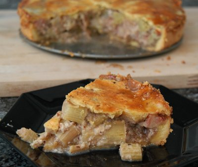

| Zutaten: | |
| Teig | |
| 280 g | Mehl |
| 100 g | Butter |
| 3 | Eigelb |
| 3 EL | Zucker |
| 1/2 dl | Milch |
| 1/2 TL | Salz |
| Füllung | |
| 550 g | Rhabarber |
| 150 g | Zucker |
| 150 g | Haselnüsse |
| Vanillezucker | |
Mürbeteig bereiten. 30 Minuten ruhen lassen.
Teig halbieren und auswallen (so gut das geht...). Erste Hälfte in gut gefetteter Springform auslegen, dass ein 2 Finger hoher Rand entsteht.
Haselnüsse mit Zucker und Vanillezucker mischen, erste Hälfte davon auf Teigboden ausbreiten, gewürfelten Rhabarber darüber. Dann den Rest der Haselnüsse.
Schliesslich die andere Teighälfte darüber legen, an den Rändern gut andrücken.
Mit (wenig) verbliebenem Eiweiss bestreichen. Im vorgeheizten Ofen bei nicht zu grosser Hitze (vielleicht 180°C gut durchbacken (vielleicht 1 Stunde). Mit Puderzucker gut bestreuen.
Herbert Eigenmann, Code: RHB
Obwohl das Rezept doch eher vage Angaben zur Backzeit und Temperatur enthielt gelang mir der Kuchen sehr gut. Er ist wunderbar saftig. Da der Saft aber aus viel Zucker besteht ist er unglaublich süss. Besser man isst davon nur wenig. RE 6. April 2009
@LINKBACK_TAG@ @WAKELOCK@